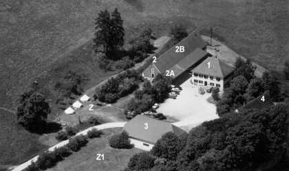
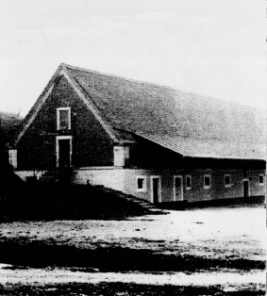

|

|
| 1) |
Haupthaus
(Belegungseinheit mit 36 Betten)
|
| 2) |
Nebengebäude
(im Obergebäude befindet sich die Tenne)
|
| 2A) |
Sanitärtrakt Zeltplatz (abgetrennter Teil im Nebengebäude)
Getränkelager abgeteilt nach Belegungseinheiten
|
| 2B) |
Nebengebäude
(Belegungseinheit mit 20 Betten)
|
| 3) |
Mehrzweckhalle
(steht zur Nutzung nicht mehr zur Verfügung)
|
| 4) |
ehemaliger Saalbau |
| Z) |
Zeltplatz (Z=Terrassenplatz, Z1=großer Platz)
|
|
Genaue Aufteilung der Räumlichkeiten in der Belegungseinheit
"Haupthaus":

|
Erdgeschoß:
|
komplett eingerichtete Selbstversorgerküche
Speise-/Aufenthaltsräume mit max. 48 Sitzplätzen
2 Waschräume mit je 2 Duschen
2 Toiletten, eine davon behindertengerecht
|
Obergeschoß:
|
4 Schlafräume (2 x 12, 2 x 6 Betten)
1 Waschraum mit Dusche und WC
(angegliedert an ein 6-Bett-Zimmer)
2 Aufenthaltsräume für ca. 10 und 20 Personen
|
|
Genaue Aufteilung der Räumlichkeiten der Belegungseinheiten
"Nebengebäude" und "Zeltplatz":
|

|
Nebengebäude:
|
komplett eingerichtete Selbstversorgerküche
Speise-/Aufenthaltsraum mit ca. 40 qm
2 Gruppenräume mit je ca. 15 qm
2 Schlafräume (12 und 8 Betten)
1 Waschraum mit 5 Waschgelegenheiten, 1 Dusche
1 Toilette
|
Zeltplatz:
|
Hauptplatz für ca. 70 Personen
2 kleinere Terassenplätze für ca. 30 Personen
eigene Sanitäranlagen mit je 2 Duschen, 2 Toiletten
1 behindertengerechtes WC
Strom-/Wasseranschluß
Getränkelager
Spielwiese, Grillplatz
|
|
Letzte Änderung:
08.04.2000,
joerg
|